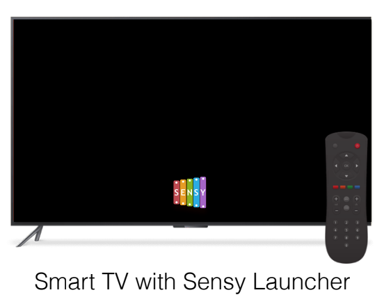
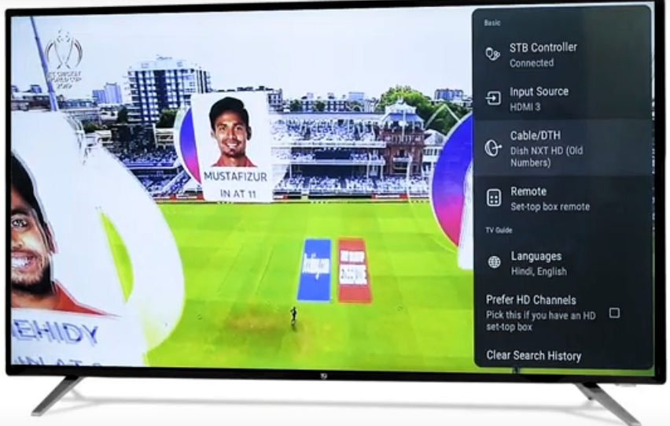
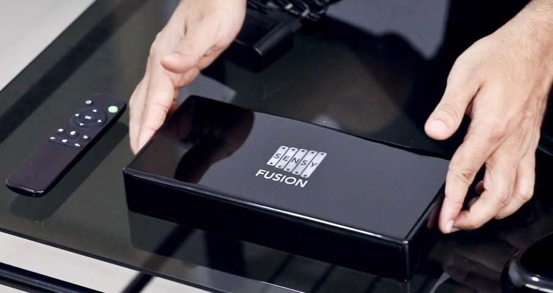
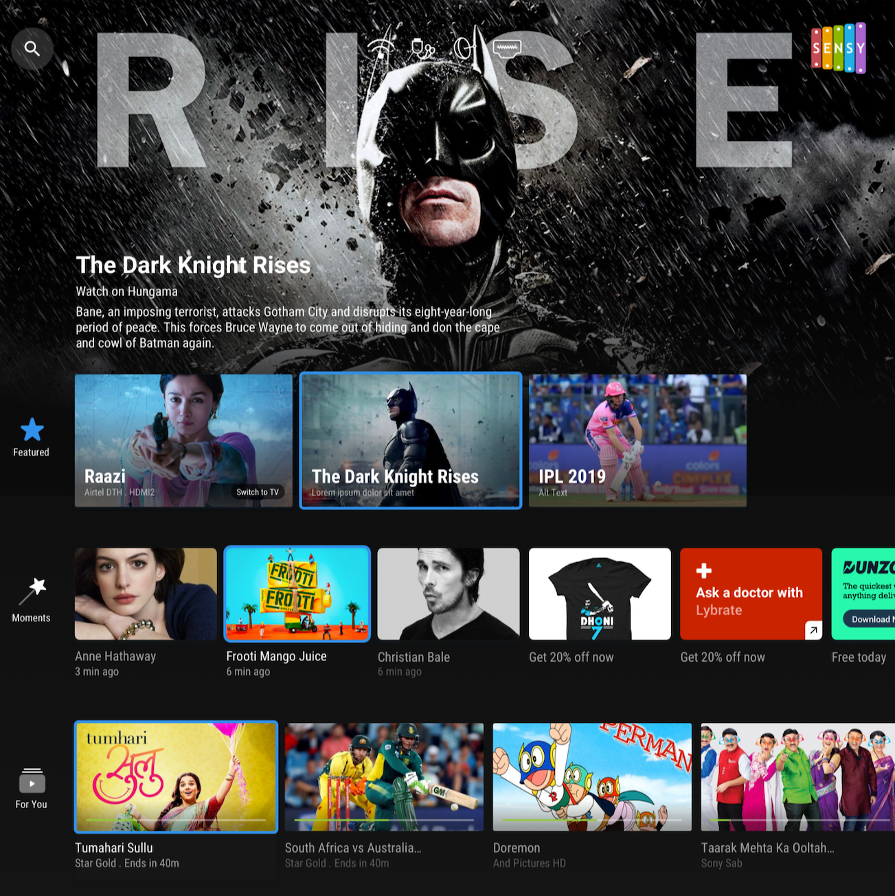
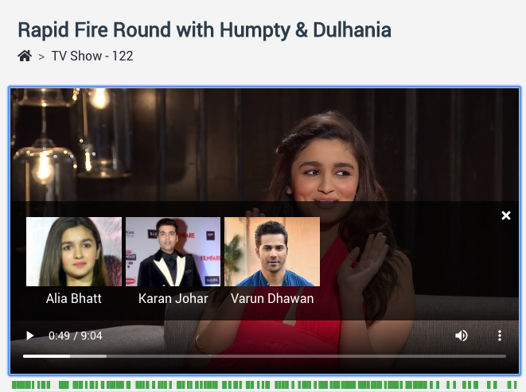
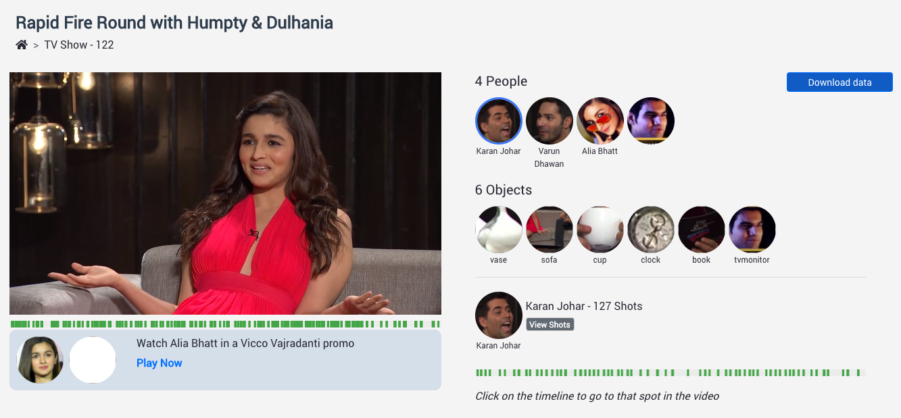

|
Naveen Reddy Desanur
I am a machine learning engineer at Sensara Technologies, where I work on image/video content analysis using computer vision and deep learning techniques.
At Sensara I've worked on problems such as channel logo recognition, image quality analysis, object detection/recognition, face recognition, deep metric learning, image similarity, on-device machine learning.
I did my bachelers in Computer Science & Engineering at PES University, Bangalore.
Email /
Resume /
|
|
|
Work Experience
|
|
Sensara | Machine Learning Engineer
January 2018 - Present | Bengaluru, India
|
|

|
Worked end-to-end on Channel Logo Recognition using Deep Learning which is part of over 100K+ Smart TVs
- Low compute, completely offline, on-device privacy enabled Channel Logo Recognition part of Smart TVs.
- Worked on everything starting from data collection, preprocessing, cleaning to model selection to train, test and finally deploying.
- Went through the Idea->Experiment->Test loop over 20+ times to achieve production level accuracy. This was due to minute
inter-class-similarities in the logos.
- Deployed model on Android platform using Tensorflow Lite. Added support for Over the Air Model updation.
This work part of Smart TVs having Sensy Launcher such as Blaupankt, Hyundai, VG TVs.
Technologies : Tensorflow, Tensorflow Lite, Android, TF-Slim.
|
|

|
Auto-Configuration of HDMI Source, Operator Settings on TVs.
- Worked on automatic configuration of preferred HDMI and TV Operator without any user intervention.
- Once the user starts watching Live TV, the HDMI Source and TV operator is automatically detected using Deep Learning and configured.
- This helps the user to use all features of our Sensy Launcher without manual configuration.
|
|

|
Audience Measurement Device - AI powered Pass Through Box
- Worked on integration of Edge AI features such as Channel, Operator Recognition along with features such as Black Screen Detection, local Audio Content Recognition, HDMI State Detection, Landing Page Detection.
- Worked on ensuring lag free experience for end user along with these computations.
Explored : AudioRecord of Android, tinycap, AOSP platform, On-Device ML
|
|

|
Image Quality Analysis
- Worked on image quality analysis to rank and select best Show Banners, in-Scene and apparel images. Images were analysed on a range of parameters such as Aesthetic quality, Blurness, Contrast, Interlacing.
- Face Quality Analysis to select best Faces of people from Scenes and avoided passing bad quality face images for inference to the Recognition Pipeline.
|
|

|
Improvement of Face Recognition
- Improved existing face recognition systems to current state-of-the-art face recognition models.
- This lead to 4x improvement in terms of precision and recall.
- Worked on improving recognition for faces with higher degree of tilt and occlusions.
- Speeding up of face recognition latency with faster search capabilities.
Technologies : ONNX, Mxnet, Nearest neighbor search.
|
|

|
AI based Video Indexer
-> Blog
- Added AI capabilities to the Video Indexer which includes Brand Logo Detection, Object Detection and Face Recognition for on-Demand videos.
- Includes Face Quality Analysis to showcase the best Face/Banner images used to represent the video.
- Worked on getting best accuracy, recall with minimal compute and latency.
Explored : CPU Optimisations, Accuracy/Recall Tradeoffs with compute limitations
|
|
|
Automated Tagging of Commercials, Promos played on TV
- Working on automatic matching of Commercials for Products and Programs(House Promos) using unsupervised approaches which includes clustering, distance based matching.
- Working on Scalable Brand/Product logo recognitions using clustering and deep metric learning.
Explored : Clustering, Deep Metric Learning, Unsupervised Learning
|
Template credits to Jon Barron.
|